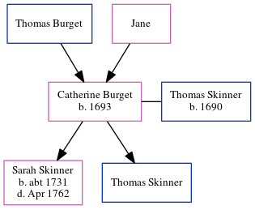

Catherine Skinner (née Burget) 1693 -
[ Home ] | [ Calendar ] | [ Surnames Index ] | [ Errors ] | [ Family History ]The child of Thomas Burget and Jane, Catherine Burget, the 6 times great-grandmother of Nigel Horne, was born in Dover, Kent, England in 16931, was baptised in Kent, England on 6 Mar 1693 and married Thomas Skinner (with whom she had 2 children: Sarah and Thomas) in Dover on 23 Nov 17182.
Parents
Children
- Sarah was born c. 1731
- Thomas was born c. 11 Oct 1719
Citations
- Kent, England, Tyler Index to Parish Registers, 1538-1874 Online publication - Provo, UT, USA: Ancestry.com Operations, Inc., 2010. This collection was indexed by Ancestry World Archives Project contributors.Original data - Frank Watt Tyler. The Tyler Collection. Canterbury, Kent, England: The Institute of Herald
- England Marriages 1538-1973 - Findmypast
Media
England Marriages 1538-1973 - R_847820058/2
Family Tree
Map
Generated by ged2site. Last updated on Jul 3, 2024
Known Issues
Date of baptism (6 Mar 1693) before date of birth (1693)